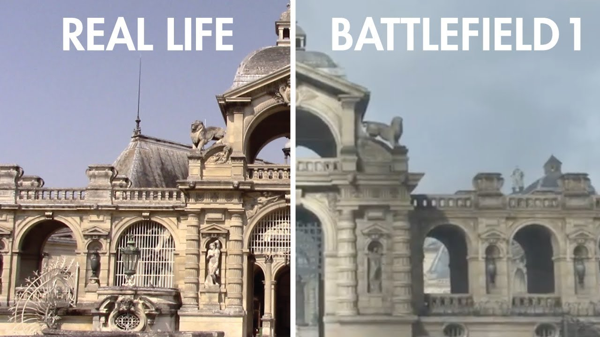
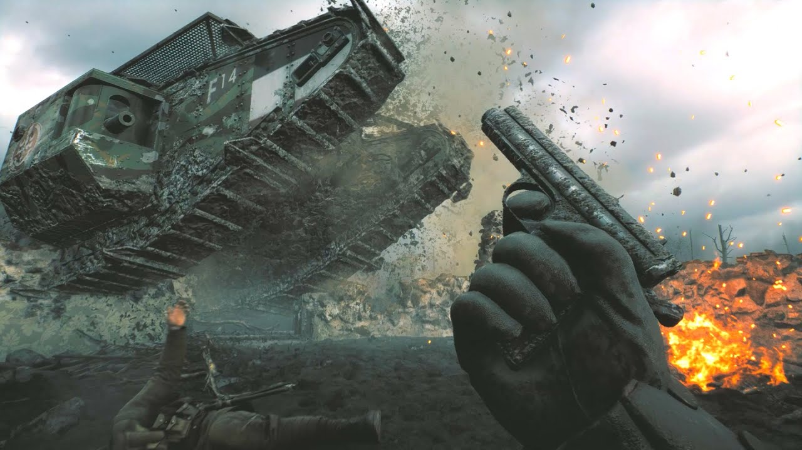

2016 for gaming was a very future focused time for the AAA FPS genre, games like Overwatch, Titanfall 2, and Call of Duty Infinite Warfare all were future focused games. Many would have thought Battlefield would follow the same suit as their previous games had suggested going from battlefield 3 to 4 to hardline all of which progress slowly more into the future. However for 2016 Dice decided to go against the grain and release Battlefield 1 set in World War 1 and in the process made one of the best FPS games to date. As mentioned previously, BF1(Battlefield 1) is set between 1914-1918 and allows players to join the Russian, American, German, Italian, Austria-Hungary, Ottoman, and British armies as they fight in historic battlefields. There is a long list as to why BF1 is such a well made game, but in this review we are going to focus on audio, visuals, and gameplay.
Audio
First up is audio, BF1’s music is very well crafted and makes the player feel the correct emotions when the time calls for it. You hear triumphant music when you capture points or are about to win a game, sad music when you lose objectives or when you lose the game, and tense music when the game is close and any side could win. Although the music is good, that's not what drew me into the game. What amazed me while playing BF1 is the voice acting which I believe to be some of the best voice acting I’ve heard for a multiplayer shooter game and probably stack up against some more story focused games. The characters convey such emotion through whatever they are doing. If someone needs ammo and they are in the middle of a fight you can hear them yelling to get ammo. When your comrades are shot next to you, you can hear their blood curdling screams as they slowly die out. When a gas grenade is thrown you can hear your squad leaders telling his men to put on masks. All of these interactions are delivered with such expressiveness that it perfectly captures the dread and horror of fighting in World War 1. Although you are supposed to have fun while playing the game, Dice wants to make sure you don’t think it was pleasant to be in those people's position.
Visuals
Adding onto the audio, what really helps convey the full scale of BF1 is the visuals. All of the maps are beautifully created with excruciating attention to detail on all of the maps based on real life battlefields to the point that you could look at them side by side and have a hard time telling the difference.

Not only is the map layout and attention to detail impressive, the actual graphics even for being a 6 year old game are some of the most impressive I have ever seen and I personally believe that it is better than many modern games coming out. Playing the game in no HUD mode creates a whole new experience for the player, allowing them to take in the beauty of the map with no overlay to distract them and being able to experience moments that look like it could only come from a trailer.

Gameplay
The last Area I would like to focus on is the actual gameplay. This is quite the broad topic but I will try to be concise. Overall the gameplay feels great, the guns all feel amazing no matter which ones you are using and the different classes all have their own unique feel that makes it feel like it matters that your team has a good composition of all the roles to successfully win the match. BF1 does a great job mixing both real life guns that servicemen would have used and guns that were in the same time period but were never produced or widely given out. The amount of weapons in each class allows the player to play each of the four different classes differently. For example in the assault class, you can focus on being a trench/bunker clearer and use shotguns to kill enemies close range, you can also go for a tank hunter loadout where you will focus on hunting down enemy vehicles and destroy them with various explosives, or you could just pick up a submachine gun and just start trying to get kills anywhere. Each class allows for a lot of variation and modulation to cater the experience to how you like. Overall battlefield 1 does a good job balancing the different classes to one another with what each is able to do but it fails in one crucial area, weapons balancing. Even though it is really cool that there is a ton of variation of weapons you can choose from, there are certain guns that are just so much better that there isn’t much of a point to use anything else. For assault there is the hellriegel or the smg 18, both are fairly similar and have similar critiques. They are both high capacity, fairly low recoil,fairly long range, and have a quick time to kill. There really isn’t any downside to using these guns, if you are to compare it to almost any other assault, medic, or support guns in a short to more importantly mid range fight, those guns will win most of the time with equally skilled players. The other guns I will talk about are in the support class with their telescopic machine guns. These are also very high capacity guns which make sense for being a light machine gun, however what makes them unbalanced is their range. Players are able to lie on the ground and using a bipod, shoot basically straight across a decent portion of the map with not much damage drop off with low recoil and just constantly shoot enemies that could never even touch them. Another issue that BF1 faces is the balance of vehicles, if you have played the game long enough you have seen plenty of lobbies with someone playing the artillery truck all the way in the back with a 50:1 KD who never dies the entire match. This also goes for the planes, there are three options consisting of the fighter plane, the bomber, and the attack plane. While the fighter and the bombers have pros and cons as to why or why not use them, there is almost no downside of using the attack plane as it does what the fighter and bomber do but just better. Moving past some of the issues BF1 faces, the team has done a great job with the game modes, specifically the new mode operations. In this mode, players have to go up against larger teams with limited respawns unless you are able to defend or capture areas. It differs from conquest as it is a larger scale and also the teams are not fighting for control of multiple flags, more one team is trying to capture while the other defends. The games take a bit longer than conquest but I think in the end it is worth it as it provides a more satisfying experience if you either win while attacking and finally pushing through and slowly overcoming the enemy, or if you win from defending and holding out while endless waves of enemies come at you.
Conclusion
Overall Battlefield 1 took a risk going against the direction that the AAA field was going and went to an era no other AAA FPS game had attempted and ended up making one of the most compelling, beautiful, and stunning games in the last decade.I would give this game a 9/10, it has all of the right components with how well the game was made but falls short slightly in certain areas of balancing that makes some of the offerings of the game not worthwhile.